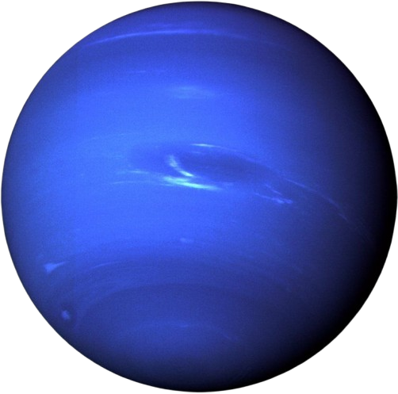

Neptuno
Neptuno es el planeta más lejano del sistema solar. Tiene los vientos más fuertes registrados en cualquier planeta.
Datos importantes
- Distancia al Sol: 4.5 mil millones de km
- Duración del año: 165 años terrestres
- Tiene 14 lunas
- Posee los vientos más rápidos del sistema solar